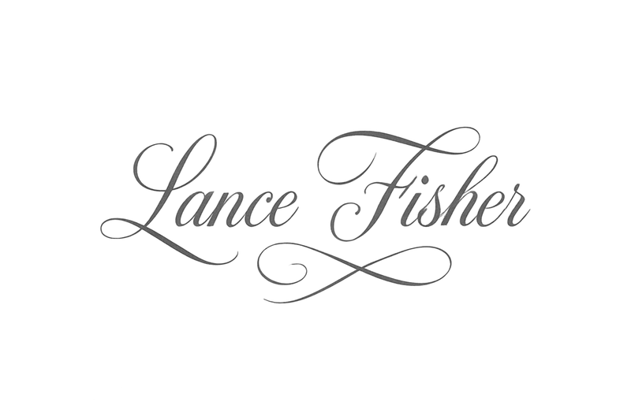
Leader · Builder · Father · Husband
Fisher Sovereign Systems
Mens clara in tenebris
Building the Architecture for Independence
The algorithm does not work for you. It works on you.
To observe, categorize, and convert your behavior into revenue. Every search, every click, every pause is a data point inside a system you didn’t design, can’t inspect, and rarely benefit from. You were never the customer. You were the inventory.
Fisher Sovereign Systems is the refusal. Encrypted. Local. Sovereign. Infrastructure engineered to answer to the person using it — not the company profiting from it.
A throughline connects every project in this portfolio: the conviction that critical systems should run on hardware you own, process data that never leaves your network, and answer to no one’s terms of service but your own.
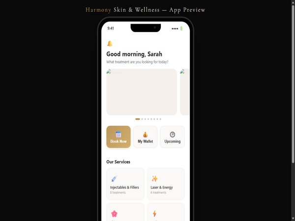
This project was born from watching a real practice struggle with scheduling inefficiency. Every screen, every booking flow, every push notification exists because Lance observed the pain points firsthand and decided to solve them. The app was designed for a real business with actual providers, services, and live client workflows.
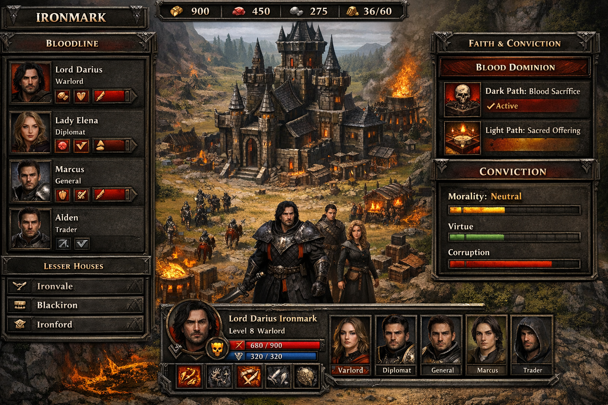
Bloodlines is not a quick skirmish game. It is a civilization simulator built around dynastic rule, where your ruling bloodline expands across a massive procedurally generated world. You govern territory through loyalty and military presence, shape your civilization through four ancient faith covenants, and escalate into late-game divergence through economy, warfare, prestige, or divine right. The combat layer stays pure Command and Conquer: clean counters, readable unit roles, and fast engagements, even under 6 to 10 hour stress tests.
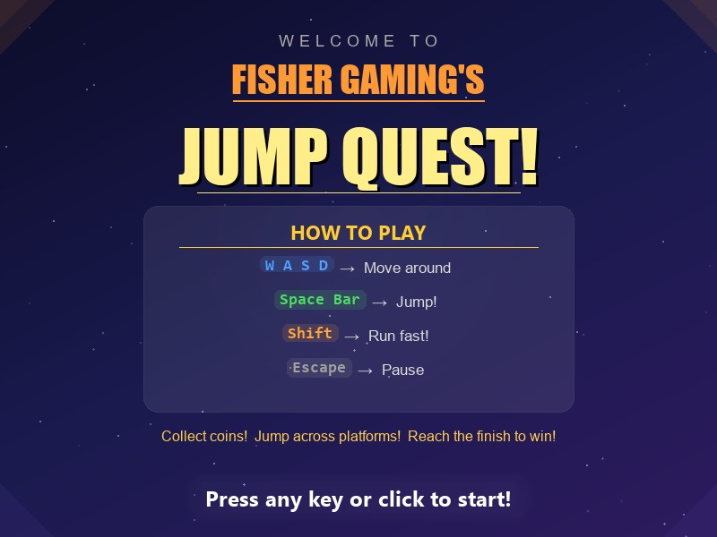
The best code Lance has ever written was for his son. A kid doesn't care about the architecture or the procedural level generation. He cares that the coins sparkle and the jump feels good. Honestly, that's the highest bar there is.
Lance built this engine on a simple conviction: speed, discipline, and brutal honesty. Six engines across five exchanges isn't about complexity for its own sake. It's about never being locked into a single venue. Paper-first is non-negotiable. He'd rather miss a trade than lose capital to an untested strategy.
This is the project that watches all the other projects. Lance got tired of context-switching between repos, forgetting what he pushed from his phone, and losing track of which project needed attention. ProjectHub solves it by treating the entire workspace as a single system. Every repo, every sync, every status check flows through one place.
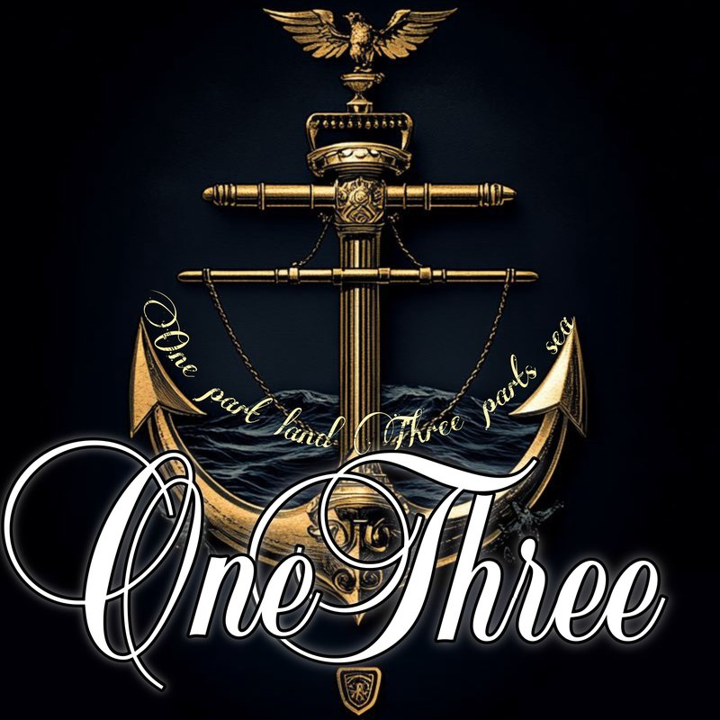
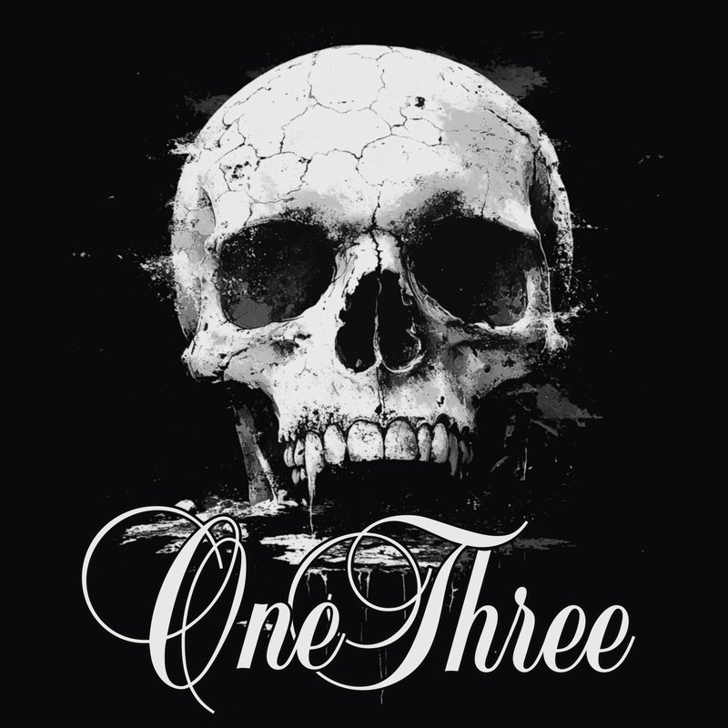
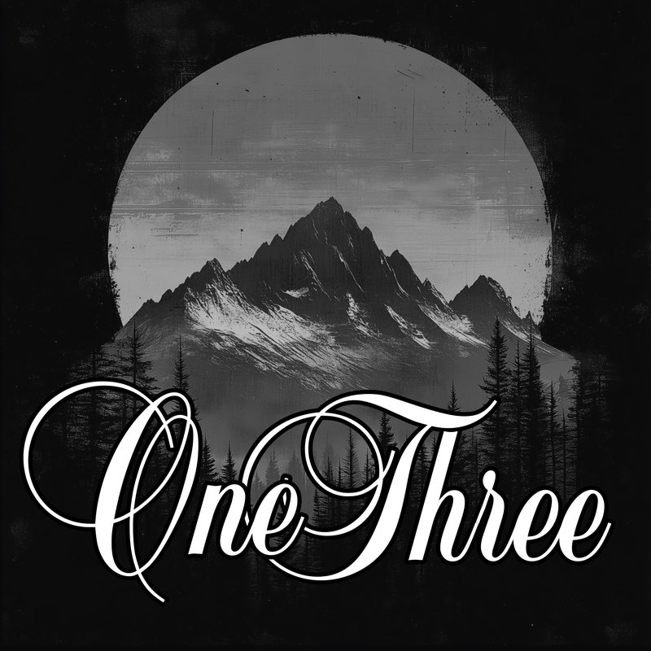
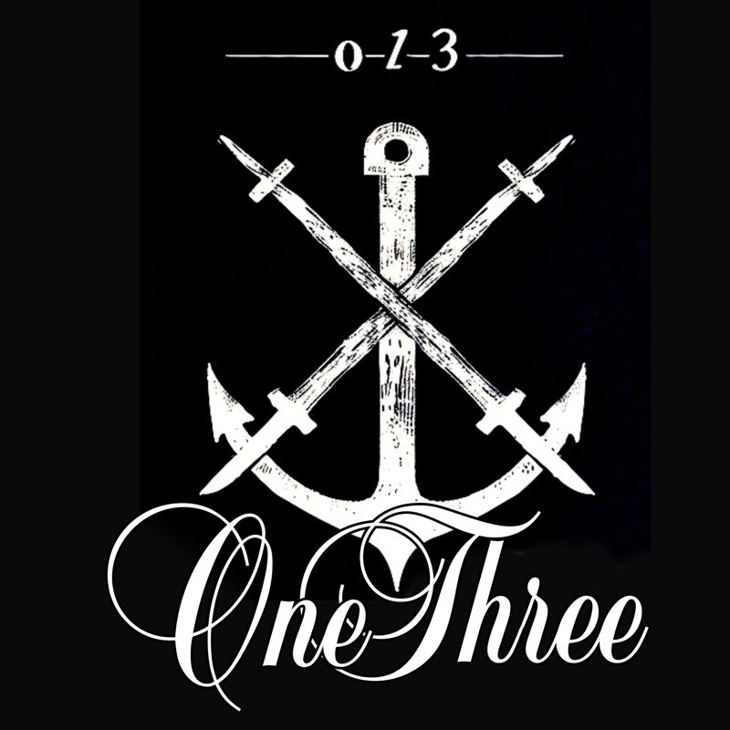
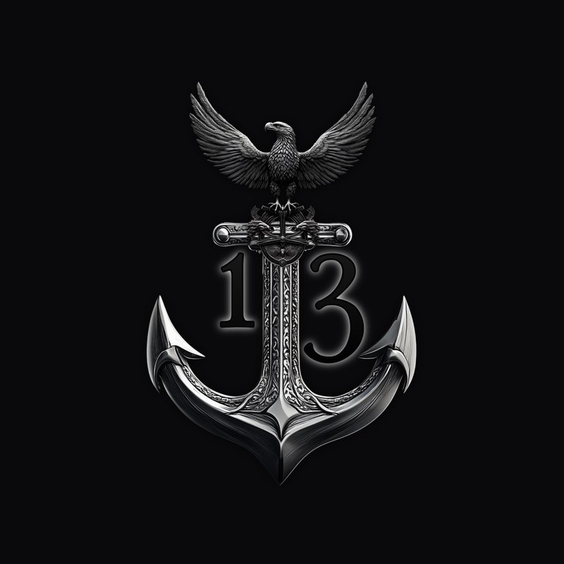
Fisher One-Three started as a sketch on a napkin and became a full brand with its own ethos, website, and storefront. Every design is original, every color choice deliberate, every run limited. The name encodes the Fisher surname and the maritime ratio that drives everything: one part land, three parts sea. It is wearable art for people who dream of the ocean even when they are nowhere near it.
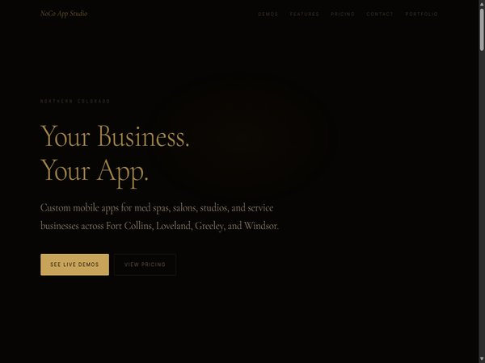
Every local business deserves a branded mobile app. Not a Vagaro page. Not a Booksy listing. Their own app, with their name, their colors, on their clients' home screens. NoCo App Studio is the vehicle for that vision. Lance built 10 fully interactive phone mockup demos for real businesses across Northern Colorado, each with their actual services, branding, staff, and pricing. The pitch is simple: your clients will book from your app, not a third-party marketplace.
This is where AI stops being a buzzword and starts being accountable. Six agents, each with a specific job, each required to justify its decisions. The promotion gates are intentionally harsh. No strategy goes live without proving itself over weeks of paper trading. Lance built this because he doesn't trust black boxes, and neither should anyone else.
Privacy isn't a feature. It's a right. Lance built this because he believes Americans should be able to have a conversation without a corporation reading it. Zero-knowledge architecture means the server literally cannot see the messages. No backdoors, no compromises. The kind of tool the Founders would have appreciated.
A man's home is his castle, and he should know exactly what's happening inside its walls and on its network. Lance built Home Hub because he doesn't trust cloud cameras or third-party monitoring. Every byte of data stays local in SQLite, every camera feed streams on his LAN, and every unknown device that joins his network triggers an alert. Sovereignty starts at home.
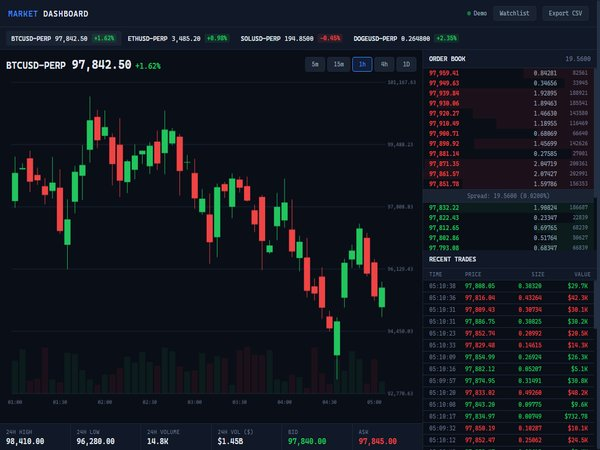
Every trader needs a terminal they can trust, and trusting something means building it yourself. This dashboard pulls live data from crypto.com Exchange API through a Python proxy and renders it all on raw Canvas 2D. Candlestick charts, order book depth, live trade tape, multi-market watchlist. No charting library. No framework. Every pixel is mine.
Prediction markets are the purest form of putting your money where your mouth is. This tool started as a quick terminal script on Lance's phone and evolved into a full TA suite with copy-trading. Reading Chainlink oracles directly means no middleman for price data. Decentralized conviction, backed by code.
Lance bookmarks dozens of ideas on X every week: threads about new patterns, clever API tricks, architecture insights. This bot turns that passive scrolling into real improvements across his entire project portfolio. Zero dependencies, pure Python stdlib, and absolutely nothing happens without his explicit approval. The bridge between inspiration and implementation.
This is where it all started. A single HTML file with storms, lightning, and a galleon sailing through the rain. Twelve different concepts explored, each one pushing what's possible without a single npm dependency. The final design being viewed now was born from the lessons of every concept that came before it. The archive lives on in the concepts gallery below.
Auton is the project that watches all other projects. It scans the entire workspace, reads every CLAUDE.md, every session log, every git history, and proposes improvements. It runs Qwen 2.5 14B on a local GPU through Ollama, so nothing ever leaves the machine. The multi-agent architecture mirrors the trading desk: Scanner, Planner, Executor, Tester, Reviewer, Monitor. DRY_RUN by default, promotion gates for any real changes. It is the future of how Lance maintains 20+ projects at scale.
Every local business deserves a branded mobile app. Not a Vagaro page. Not a Booksy listing. Their own app, with their name, their colors, on their clients' home screens.
NoCo App Studio builds custom booking and client management apps for med spas, nail salons, hair salons, fitness studios, pet groomers, chiropractors, and more. Each app includes online booking, push notifications, prepaid wallets, loyalty programs, and a full admin dashboard.
10 live demos have been built for real Northern Colorado businesses. The platform is proven, the pricing is transparent, and the work is ready.
See Live Demos →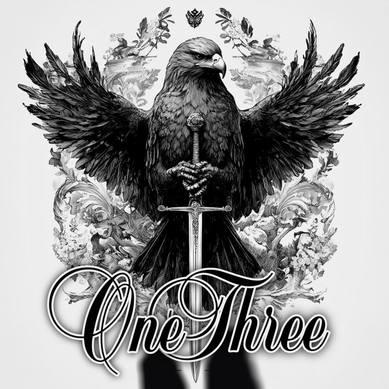
Four engines, one orchestrator, one brain. Every trade flows from strategy research through risk validation to execution. DRY_RUN by default. Live requires promotion gates.